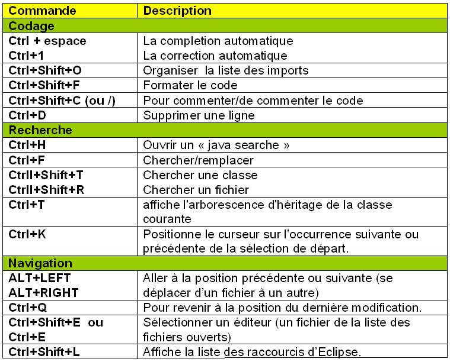

* tableau des combinaisonsUn raccourcis clavier consistent à appuyer simultanément sur deux touches du clavier pour donner une combinaison qui correspond à une commande que l’ordinateur comprend. Pour utiliser un raccourci, vous devez d’abord presser sur la première touche du raccourci qui est toujours la même: CTRL et la maintenir enfoncée, ensuite vous appuyez une fois sur la lettre du clavier qui correspond à la commande que vous souhaitez appliquer.
Il permet de copier un texte, une image ou un fichier/dossier, peu importe leur grandeur, et de le restituer à un autre endroit. Ceci ne veut pas dire qu’il va le déplacer, il va en faire une copie.Sachez qu’il n’est possible d’avoir qu’un seul copier en mémoire dans l’ordinateur à la fois. Vous ne pourrez donc pas copier un élément, ensuite un autre élément sans perdre le premier élément qui se trouvait en mémoire de copie. Lorsque vous collerez vous aurez toujours le dernier élément copier dans la mémoire de l’ordinateur.
Couper (CTRL X) est la même chose que copier, sauf qu’il va effacer la source au moment où vous collerez (CTRL V) à un autre endroit. C’est donc très pratique pour déplacer quelque chose; bien que ça reste dans la majorité des cas plus facile à faire à la souris.
Annuler (CTRL Z) est l’un des raccourcis les plus pratiques, et des plus essentiels à l’utilisation d’un ordinateur. Tout le monde se trompe, même le meilleur des informaticiens, c’est pourquoi il est important de pouvoir rebondir en cas d’erreur. Où que vous soyez sur l’ordinateur, et peu importe ce que vous avez fait (de bien ou pas, l’ordinateur ne porte pas de jugement de valeur sur les «erreurs»), l’ordinateur se souvient toujours de la dernière action que vous avez appliquée. Il se pourrait que cette dernière action n’était pas ce que vous vouliez faire, alors pour l’annuler, il suffit simplement de faire CTRL Z.
La touche Print Screen / Impr. Ecran que vous trouverez en haut à droite du clavier sert à faire une photo de ce que vous avez à l’écran. Quand vous utilisez cette touche elle place la photo d’écran en mémoire «copie», c’est donc comme si ça avait fait un CTRL C de votre écran. Après avoir fait l’impression d’écran, il vous faudra donc la coller dans un document vierge pour la voir.
En résumé: Les raccourcis sont des touches ou des combinaisons de touches qui vous permettent de faciliter votre travail. La plupart d’entre eux se font à l’aide de la touche CTRL mais plusieurs existent sur d’autres touches comme ALT ou des combinaisons telles que CTRL ALT et MAJ. Si vous souhaitez connaître plus de raccourcis, lié aux applications que vous utilisez le plus souvent vous trouverez la combinaison du raccourcis lorsque vous ouvrez les menus en haut du programme (Fichier / Edition / Affichage...) suivant le programme dans lequel vous êtes. Dans ces menus, vous trouverez à droite de chaque option (en grisé) le raccourci correspondant.